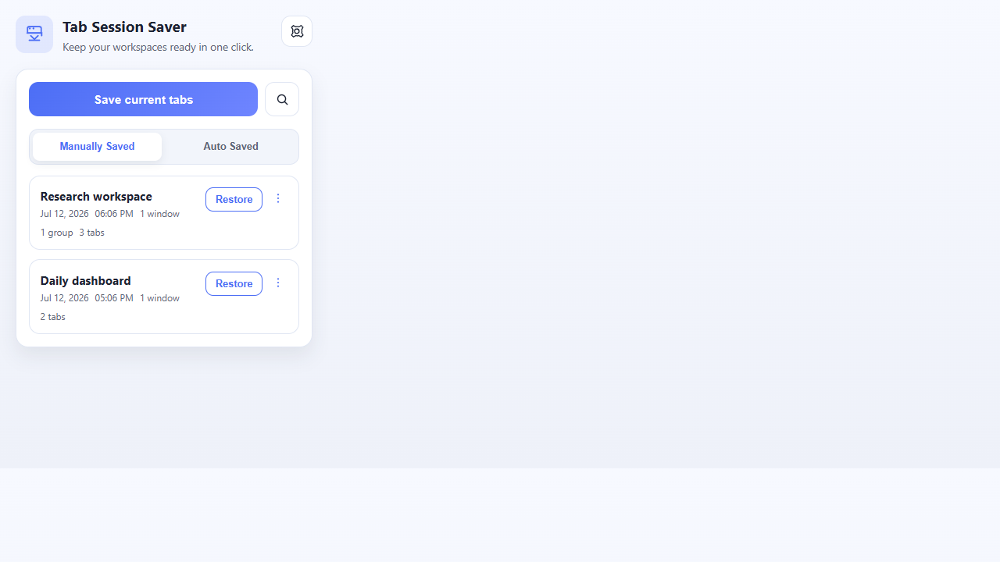
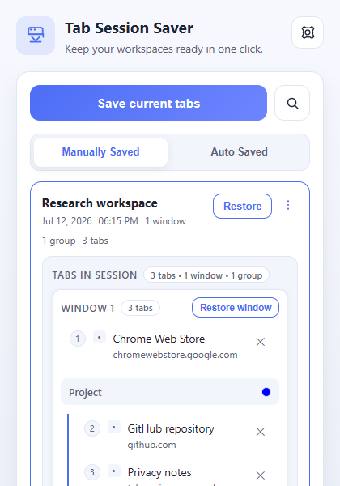
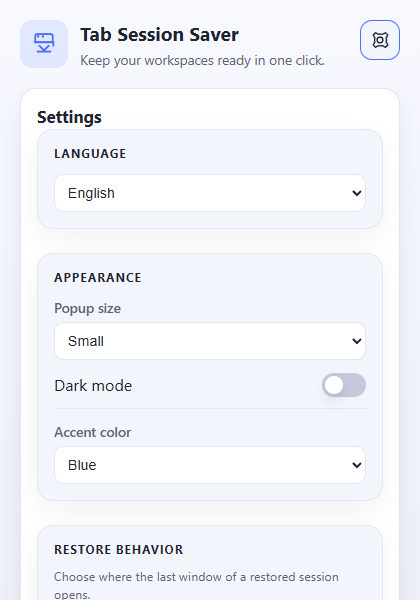

One-click sessions
Capture tabs, windows, and groups.
Chrome extension - Free
Save all your Chrome tabs with one click. Restore the exact session whenever you need it.
Screenshots



About
Simple: save every open tab, window, and tab group in one click.
Fast: restore full sessions or inspect them before reopening.
Portable: export/import JSON backups, with optional Cloud Sync when you want it.
Features
Capture tabs, windows, and groups.
Reopen saved workspaces when needed.
Check what is inside before restoring.
Find by title, URL, domain, or name.
Keep portable JSON backups.
Enable it only if you want multi-device sync.
Local-first storage. No account required for the core workflow. Open source on GitHub.
Install the extension and stop losing useful tab sessions.